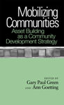

|
Beyond Preservation
Using Public History to Revitalize Inner Cities
Hurley, Andrew
A framework for stabilizing and strengthening inner-city neighborhoods through the public interpretation of historic landscapes
248 pp • 6x9 • Spring 2010
paper 978-1-43990-229-5
cloth 978-1-43990-228-8
|
|
Black Venus 2010
They Called Her "Hottentot"
Edited by Willis, Deborah
Analyzing contemporaneous and contemporary works that re-imagine the "Hottentot Venus"
288 pp • 7x10 • Spring 2010
paper 978-1-4399-0205-9
cloth 978-1-4399-0204-2 |

|
Cleavage Politics and the Populist Right
The New Cultural Conflict in Western Europe
Bornschier, Simon
A comparative study of how historical cleavages and party strategies interact to shape the fortunes of the populist right in Western Europe
260 pp • 6x9 • Spring 2010
cloth 978-1-4399-0192-2 |

|
The Delinquent Girl
Zahn, Margaret A.
A major study defining the delinquent girl, the crimes she commits and why she commits them
New in Paperback!
360 pp • 6x9 • Spring 2010
paper 978-1-59213-952-1
|
|
Essays on Twentieth Century History
Edited by Adas, Michael for the American Historical Association
Probing the paradoxes of "the long twentieth century"—from unprecedented human opportunity and deprivation to the rise of the United States as a hegemon
350 pp • 6x9 • Spring 2010
paper 978-1-4399-0270-7
cloth 978-1-4399-0269-1 |
|
Ethical Borders
NAFTA, Globalization, and Mexican Migration
Hing, Bill Ong
The first definitive biography of basketball’s inventor
248 pp • 6x9 • Spring 2010
paper 978-1-59213-925-5
cloth 978-1-59213-924-8 |
|
Feminism and Affect at the Scene of Argument
Beyond the Trope of the Angry Feminist
Tomlinson, Barbara
Showing how both feminist and anti-feminist arguments work, and providing tools for social justice and changing civic life
288 pp • 6x9 • Spring 2010
paper 978-1-4399-0247-9
cloth 978-1-4399-0246-2
|
|
Global Philadelphia
Immigrant Communities Old and New
Edited by Takenaka, Ayumi and Mary Johnson Osirim
A comprehensive analysis of the processes and consequences of immigration to Philadelphia over time
320 pp • 6x9 • Spring 2010
paper 978-1-43990-012-3
cloth 978-1-43990-013-0 |
|
Latino Lives in America
Making It Home
Fraga, Luis R., John A. Garcia, Rodney E. Hero, Michael Jones-Correa, Valerie Martinez-Ebers, and Gary Segura
A nuanced and insightful assessment of Latino life in America
224 pp • 5.5x8.25 • Spring 2010
paper 978-1-43990-049-9
cloth 978-1-43990-048-2
|
|
Livestock/Deadstock
Working with Farm Animals from Birth to Slaughter
Wilkie, Rhoda M.
How humans think and feel about their work handling food animals
248 pp • 6x9 • Spring 2010
paper 978-1-59213-649-0
cloth 978-1-59213-648-3
|
|
The Machinery of Whiteness
Studies in the Structure of Racialization
Martinot, Steve
An extensive critique of the structures of whiteness and how they produce racism in the United States
232 pp • 6x9 • Spring 2010
paper 978-1-43990-052-9
cloth 978-1-43990-051-2 |
|
Men Can
The Changing Image and Reality of Fatherhood in America
Unger, Donald N. S.
How American families are changing when it comes to care for their children
240 pp • 5.5x8.25 • Spring 2010
cloth 978-1-43990-000-0
|
 |
Mobilizing Communities
Asset Building as a Community Development Strategy
Edited by Green, Gary Paul and Ann Goetting
Case studies from a variety of settings consider the asset-building approach to community development
204 pp • 5.5x8.25 • Spring 2010
cloth 9978-1-43990-086-4 |

|
Nearest East
American Millennialism and Mission to the Middle East
Kieser, Hans-Lukas
How missionaries and evangelical politics influenced American government policy in the Middle East
224 pp • 6x9 • Spring 2010
cloth 978-1-43990-222-6
|
|
One Less Car
Bicycling and the Politics of Automobility
Furness, Zack
The power of the bicycle to impact mobility, technology, urban space and everyday life
360 pp • 6x9 • Spring 2010
paper 978-1-59213-613-1
cloth 978-1-59213-612-4 |
|
Patriotic Professionalism in Urban China
Fostering Talent
Hoffman, Lisa M.
A look at urban professionals in post-Mao China as they balance social responsibility and individual achievement
216 pp • 6x9 • Spring 2010
paper 978-1-4399-0035-2
cloth 978-1-4399-0034-5 |

|
Pedagogy of Democracy
Feminism and the Cold War in the U.S. Occupation of Japan
Koikari, Mire
A new look at democratization, women’s rights, and the Cold War in post-World War II U.S.-occupied Japan
New in Paperback!
240 pp • 6x9 • Spring 2010
paper 978-1-59213-701-5
|
|
The Public and Its Possibilities
Triumphs and Tragedies in the American City
Fairfield, John D.
Throughout U.S. history, our unrealized civic aspirations provide the essential counterpoint to an excessive focus on private interests
368 pp • 6x9 • Spring 2010
cloth 978-1-4399-0210-3
|
|
Searching for Mr. Chin
Constructions of Nation and the Chinese in West Indian Literature
Lee-Loy, Anne-Marie
West Indian literary representations of local Chinese populations illuminate concepts of national belonging
198 pp • 5.5x8.25 • Spring 2010
cloth 978-1-43990-130-4 |

|
Separate Societies
Poverty and Inequality in U.S. Cities
Second Edition
Goldsmith, William W. and Edward J. Blakely
The award-winning book on urban poverty—now thoroughly revised and updated
268 pp • 6x9 • Spring 2010
paper 978-1-43990-292-9
cloth 978-1-43990-291-2 |
|
Sync
Stylistics of Hieroglyphic Time
Tobias, James
The profound historical appeal of films, video, and digital works emphasizing synchronized musicality and gesture
304 pp • 6x9 • Spring 2010
cloth 978-1-4399-0201-1
|

|
Tyranny of the Minority
The Subconstituency Politics Theory of Representation
Bishin, Benjamin
Why do subconstituencies defeat the people's will in American politics?
New in Paperback!
216 pp • 6x9 • Spring 2010
paper 978-1-59213-659-9
cloth 978-1-59213-658-2
|
|
The Wars We Inherit
Military Life, Gender Violence, and Memory
Amy, Lori E.
How and why war and military culture have a traumatic impact on families and memory
216 pp • 5.5x8.25 • Spring 2010
paper 978-1-59213-961-3
cloth 978-1-59213-960-6
|
|
Travels of William Bartram Reconsidered
Dion, Mark
Following the contemporary path of a historic naturalist
112 pp • 8.5x12 • Spring 2010
cloth 978-0-6152-5748-8 |
|
Women's Activism and Feminist Agency in Mozambique and Nicaragua
Disney, Jennifer Leigh
Tracking women’s movements through two developing world revolutions and neo-liberal democracies
New in Paperback!
306 pp • 6x9 • Spring 2010
paper 978-1-59213-829-6
cloth 978-1-59213-828-9
|

|
Workers of the World, Enjoy!
Aesthetic Politics from Revolutionary Syndicalism to the Global Justice Movement
Tucker Jr., Kenneth H.
The rise of the public sphere, as chronicled by social movements spanning the nineteenth, twentieth, and twenty-first centuries
224 pp • 5.5x8.25 • Spring 2010
cloth 978-1-59213-764-0
|
|
Wrongful Conviction
International Perspectives on Miscarriages of Justice
Edited by Huff, C. Ronald and Martin Killias
A cross-national study that shows how various criminal justice systems are susceptible to wrongful convictions
New in Paperback!
326 pp • 6x9 • Spring 2010
paper 978-1-59213-646-9
cloth 978-1-59213-645-2
|
Click here
to download the catalog (pdf). |